| Color | \(f_i\) | \(h_i\) | Porcentaje (%) |
|---|---|---|---|
| Gris | 7 | 0.28 | 28 |
| Verde | 6 | 0.24 | 24 |
| Negro | 5 | 0.20 | 20 |
| Blanco | 3 | 0.12 | 12 |
| Amarillo | 2 | 0.08 | 8 |
| Azul | 2 | 0.08 | 8 |
| Total | 25 | 1.00 | 100 |
Estadística I
Escuela de Matemáticas · Universidad Industrial de Santander
Idea clave
Si todos los datos fueran iguales, bastaría observar uno. La razón de ser de la estadística es la variabilidad.
Estadística
Ciencia que se ocupa de recolectar, organizar, resumir, analizar e interpretar datos, para describir fenómenos y apoyar la toma de decisiones en condiciones de incertidumbre.
Estadística descriptiva
¿Cómo se comportaron estos datos?
→ Capítulo 1
Estadística inferencial
¿Qué podemos afirmar más allá de los datos, y con qué confianza?
→ Estadística II
La probabilidad (capítulos 2 a 4) es el puente entre las dos.
¿Por qué no observar a todos (un censo)?
Pregunta para el grupo
¿Una muestra más grande es siempre mejor que una más pequeña?
Parámetro: describe a la población. Fijo, pero desconocido.
Estadístico: se calcula con la muestra. Conocido, pero cambia de una muestra a otra.
| Característica | Población | Muestra |
|---|---|---|
| Tamaño | \(N\) | \(n\) |
| Media | \(\mu\) | \(\bar{x}\) |
| Varianza | \(\sigma^2\) | \(s^2\) |
| Desv. estándar | \(\sigma\) | \(s\) |
| Proporción | \(p\) | \(\hat{p}\) |
Ejemplo: la tasa de desempleo de Colombia es un parámetro; la cifra del DANE, calculada con la Gran Encuesta Integrada de Hogares, es un estadístico que lo estima.
Un banco revisa todos los créditos que otorgó en 2025 y encuentra que el 4,2 % entró en mora.
Parámetro: se calculó con toda la población de créditos de 2025.
Determinística
Su valor queda determinado por condiciones conocidas.
Aleatoria
Aun con las mismas condiciones, no se puede predecir.
Cuidado con los códigos numéricos
El estrato (1 a 6), el código de una carrera o la cédula son números, pero no son cuantitativos. Prueba: ¿tiene sentido el promedio?
Cada fila es una unidad, cada columna una variable y cada celda un dato.
| Estudiante | Carrera | Estrato | Créditos | Estatura (cm) |
|---|---|---|---|---|
| 1 | Ingeniería Civil | 3 | 18 | 172,4 |
| 2 | Economía | 2 | 16 | 160,1 |
| 3 | Química | 4 | 20 | 168,9 |
| 4 | Economía | 3 | 15 | 175,0 |
| 5 | Ingeniería Civil | 1 | 18 | 158,3 |
| 6 | Física | 2 | 17 | 181,2 |
| Escala | ¿Qué permite? | Ejemplos | Resúmenes adecuados |
|---|---|---|---|
| Nominal | \(=, \neq\) | Género, grupo sanguíneo | Frecuencias, moda |
| Ordinal | \(<, >\) | Estrato, satisfacción | + mediana, cuartiles |
| Intervalo | Diferencias | Temperatura en °C, año | + media, desviación |
| Razón | Cocientes | Peso, ingreso, tiempo | + coef. de variación |
Un día, una ciudad está a 30 °C y otra a 15 °C. ¿Hace “el doble de calor” en la primera?
No. La temperatura en °C está en escala de intervalo: el cociente no tiene sentido. En kelvin (escala de razón): 303,15 K frente a 288,15 K, apenas un 5 % más.
Una advertencia
Las escalas son una guía, no una regla mecánica: las escalas Likert son ordinales, pero a menudo se promedian. Hacerlo exige justificarlo.
| Símbolo | Nombre | Fórmula |
|---|---|---|
| \(f_i\) | Frecuencia absoluta | número de datos en la categoría \(i\) |
| \(h_i\) | Frecuencia relativa | \(h_i = f_i / n\) |
| \(F_i\) | Frecuencia absoluta acumulada | \(F_i = f_1 + \cdots + f_i\) |
| \(H_i\) | Frecuencia relativa acumulada | \(H_i = F_i / n\) |
| Color | \(f_i\) | \(h_i\) | Porcentaje (%) |
|---|---|---|---|
| Gris | 7 | 0.28 | 28 |
| Verde | 6 | 0.24 | 24 |
| Negro | 5 | 0.20 | 20 |
| Blanco | 3 | 0.12 | 12 |
| Amarillo | 2 | 0.08 | 8 |
| Azul | 2 | 0.08 | 8 |
| Total | 25 | 1.00 | 100 |
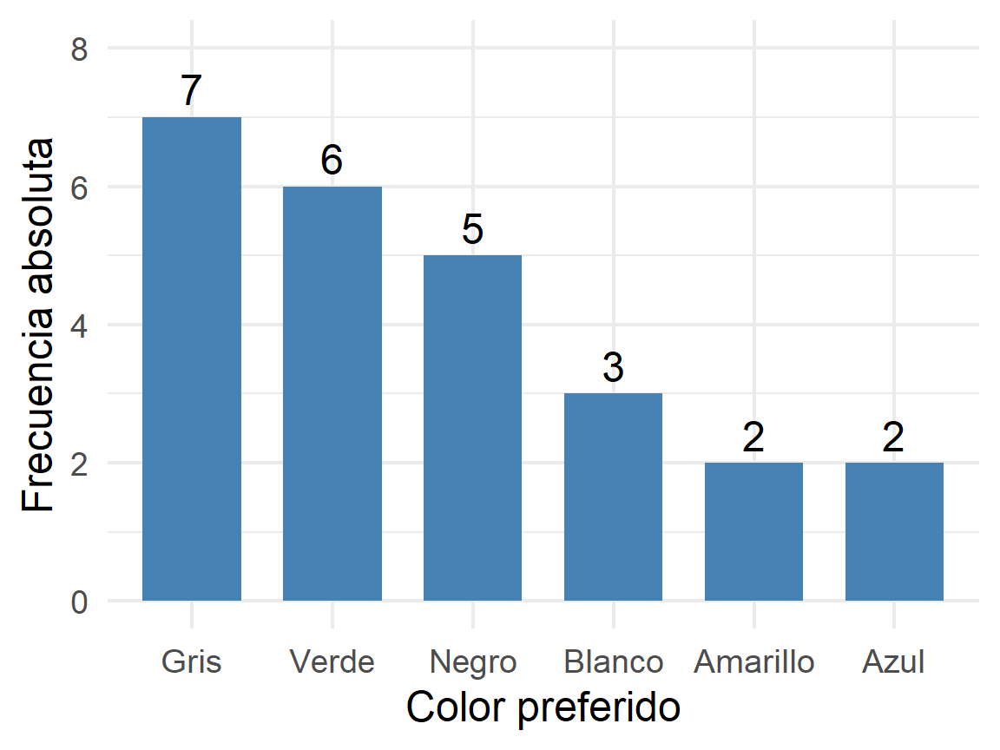
La moda es el gris (28 %); gris, verde y negro reúnen el 72 %.
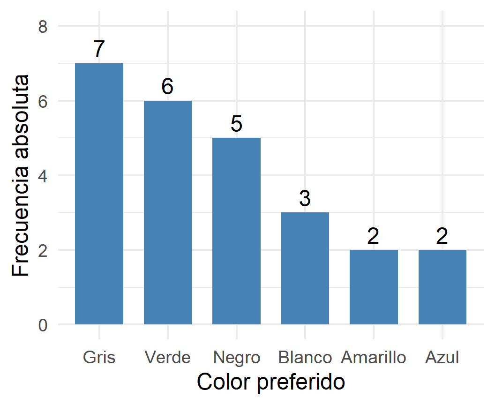
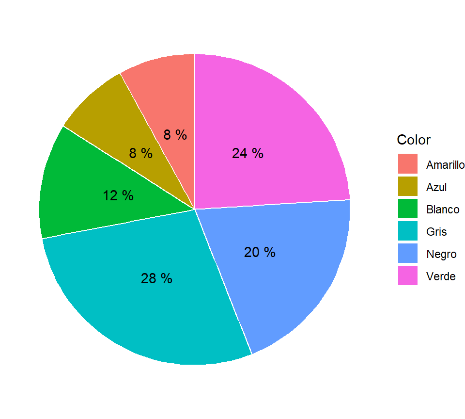
Comparamos mejor longitudes que ángulos (Healy, 2018): prefiera las barras; use el pastel solo con pocas categorías.
| Hábito de fumar | Hombre | Mujer | Total |
|---|---|---|---|
| Sí | 65 | 58 | 123 |
| No | 43 | 67 | 110 |
| Total | 108 | 125 | 233 |
Tres formas de calcular porcentajes, tres preguntas distintas:
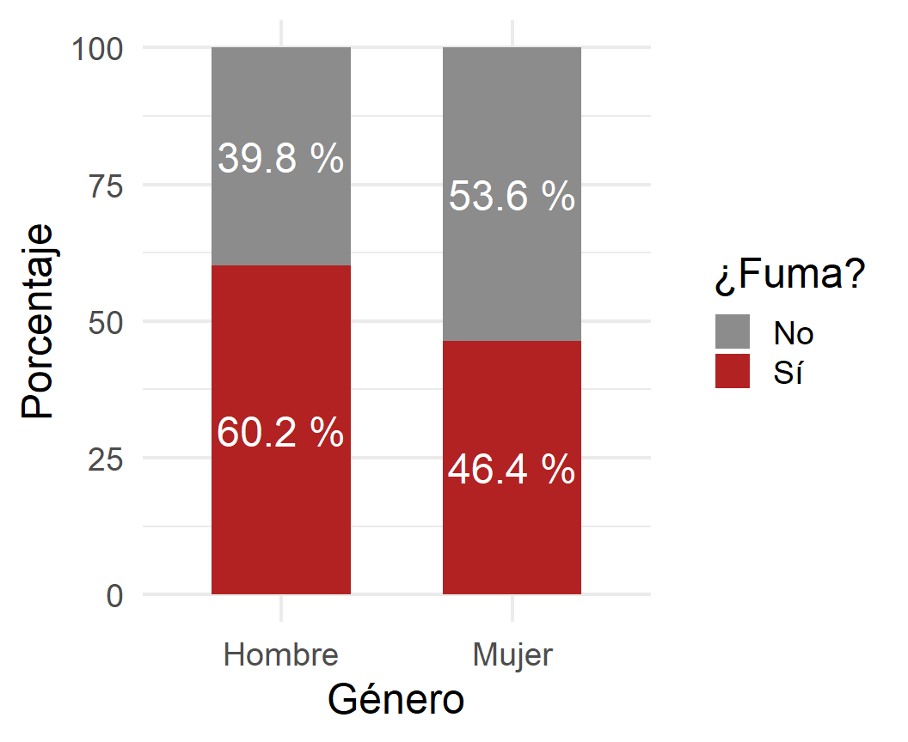
Para comparar grupos de distinto tamaño, se usan los porcentajes por columna.
Conexión con el capítulo 2
Estos porcentajes anticipan la probabilidad conjunta, marginal y condicional.
Minutos que tardan 40 estudiantes en llegar a la universidad:
14, 48, 20, 26, 23, 18, 39, 28, 17, 20, 64, 7, 35, 22, 58, 25, 30, 40, 34, 31, 24, 42, 16, 33, 53, 21, 10, 9, 44, 24, 37, 50, 30, 15, 45, 13, 12, 32, 18, 27
Arreglo ordenado:
7, 9, 10, 12, 13, 14, 15, 16, 17, 18, 18, 20, 20, 21, 22, 23, 24, 24, 25, 26, 27, 28, 30, 30, 31, 32, 33, 34, 35, 37, 39, 40, 42, 44, 45, 48, 50, 53, 58, 64
Tallo | Hojas
0 | 7 9
1 | 0 2 3 4 5 6 7 8 8
2 | 0 0 1 2 3 4 4 5 6 7 8
3 | 0 0 1 2 3 4 5 7 9
4 | 0 2 4 5 8
5 | 0 3 8
6 | 4Leyenda: 1 | 5 = 15 minutos
Número de hermanos de 30 estudiantes:
| \(x_i\) | \(f_i\) | \(h_i\) | \(F_i\) | \(H_i\) |
|---|---|---|---|---|
| 0 | 5 | 0,167 | 5 | 0,167 |
| 1 | 11 | 0,367 | 16 | 0,533 |
| 2 | 8 | 0,267 | 24 | 0,800 |
| 3 | 4 | 0,133 | 28 | 0,933 |
| 4 | 2 | 0,067 | 30 | 1,000 |
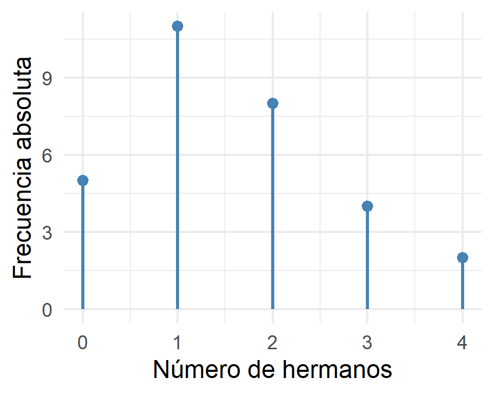
El 80 % tiene a lo sumo dos hermanos (\(H_3\)).
Convención: \([L_{i-1}, L_i)\) incluye el límite inferior y excluye el superior. El dato 25 va en \([25, 35)\).
| Clase | \(x_i\) | \(f_i\) | \(h_i\) | \(F_i\) | \(H_i\) |
|---|---|---|---|---|---|
| [5,15) | 10 | 6 | 0.15 | 6 | 0.15 |
| [15,25) | 20 | 12 | 0.30 | 18 | 0.45 |
| [25,35) | 30 | 10 | 0.25 | 28 | 0.70 |
| [35,45) | 40 | 6 | 0.15 | 34 | 0.85 |
| [45,55) | 50 | 4 | 0.10 | 38 | 0.95 |
| [55,65) | 60 | 2 | 0.05 | 40 | 1.00 |
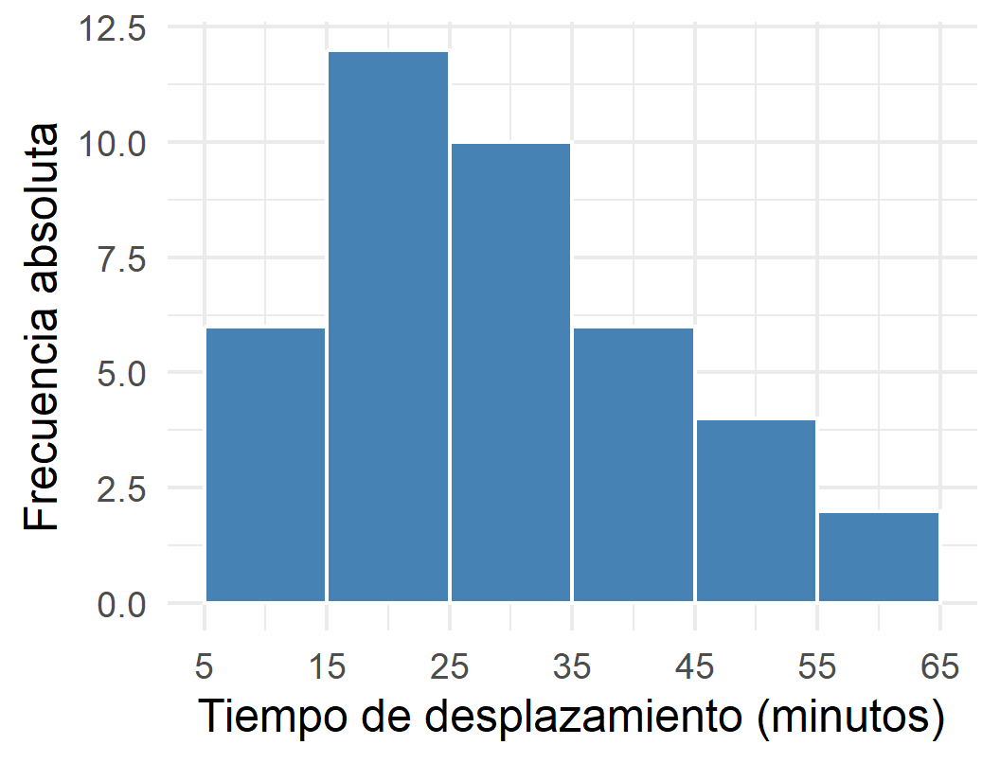
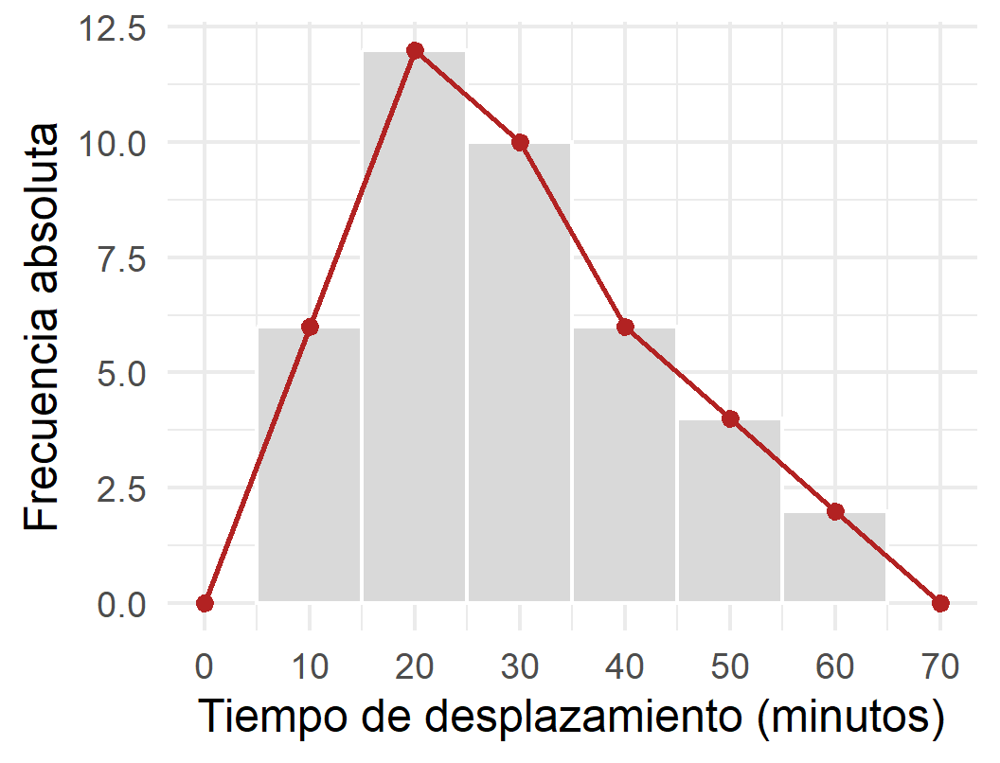
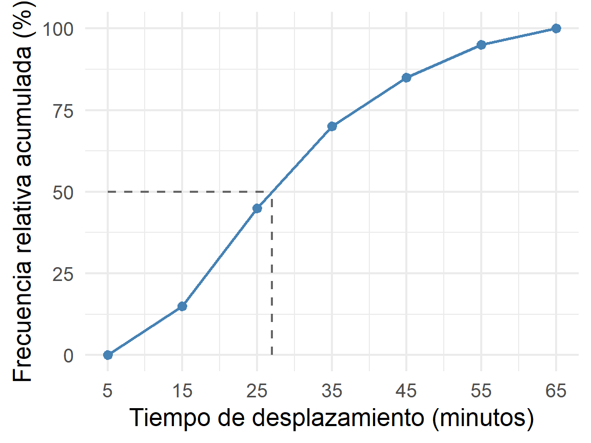
Une los puntos \((L_i, H_i)\).
Responde: ¿qué % está por debajo de un valor?
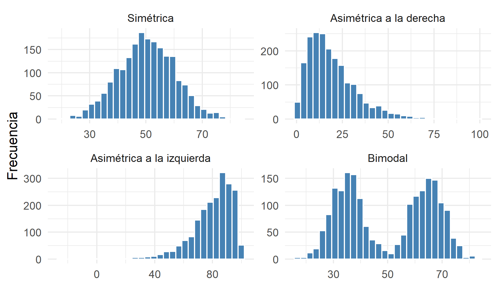
Tiempo de atención de 100 clientes de una compañía de comunicaciones:
| Tiempo (min) | [15,20) | [20,25) | [25,30) | [30,35) | [35,40) | [40,45) | [45,50) |
|---|---|---|---|---|---|---|---|
| Frecuencia | 5 | 19 | 27 | 29 | 7 | 5 | 8 |
| % acumulado | 5 | 24 | 51 | 80 | 87 | 92 | 100 |
| Tipo | Pregunta | Ejemplos |
|---|---|---|
| Tendencia central | ¿Alrededor de qué valor están los datos? | Media, mediana, moda |
| Dispersión | ¿Qué tan alejados están entre sí? | Rango, \(s\), \(CV\), \(RIC\) |
| Posición | ¿Qué valor deja cierto % por debajo? | Cuartiles, percentiles |
| Forma | ¿Es simétrica? ¿Tiene colas pesadas? | \(b_1\), \(A_P\), \(b_2\), \(K\) |
Notación: datos \(x_1, \ldots, x_n\); ordenados \(x_{(1)} \le x_{(2)} \le \cdots \le x_{(n)}\).
\[ \bar{x} = \frac{1}{n}\sum_{i=1}^{n} x_i \qquad\qquad \mu = \frac{1}{N}\sum_{i=1}^{N} x_i \]
Media ponderada: \(\bar{x}_w = \dfrac{\sum w_i x_i}{\sum w_i}\)
| Asignatura | Créditos | Nota |
|---|---|---|
| Cálculo I | 4 | 3,5 |
| Álgebra lineal | 3 | 4,2 |
| Estadística I | 3 | 4,0 |
| Inglés | 2 | 4,8 |
Promedio ponderado: \(48{,}2/12 = 4{,}02\); promedio simple: \(4{,}13\).
\[ Me = \begin{cases} x_{\left(\frac{n+1}{2}\right)} & n \text{ impar}\\[2mm] \dfrac{x_{\left(\frac{n}{2}\right)} + x_{\left(\frac{n}{2}+1\right)}}{2} & n \text{ par} \end{cases} \]
Salarios (millones) de seis empleados: 2,0; 2,2; 2,4; 2,5; 2,9 y 15,0 (el gerente).
Media: \(27/6 = 4{,}5\)
No representa a nadie: cinco de seis ganan menos de 3 millones.
Mediana: \((2{,}4 + 2{,}5)/2 = 2{,}45\)
Representa el salario típico.
La mediana es robusta: no la afectan los valores extremos. En los tiempos, \(\bar{x} = 28{,}85 > Me = 26{,}5\): la cola derecha “jala” la media.
\[ s^2 = \frac{1}{n-1}\sum_{i=1}^{n}(x_i - \bar{x})^2, \qquad s = \sqrt{s^2} \qquad\qquad \sigma^2 = \frac{1}{N}\sum_{i=1}^{N}(x_i - \mu)^2 \]
¿Por qué n − 1?
Las \(n\) desviaciones suman cero: solo \(n - 1\) son “libres” (grados de libertad). Además, así \(s^2\) no subestima a \(\sigma^2\) (Estadística II).
Datos: 54, 21, 53, 33, 10; \(\bar{x} = 34{,}2\)
| \(x_i\) | \(x_i - \bar{x}\) | \((x_i - \bar{x})^2\) |
|---|---|---|
| 54 | 19,8 | 392,04 |
| 21 | −13,2 | 174,24 |
| 53 | 18,8 | 353,44 |
| 33 | −1,2 | 1,44 |
| 10 | −24,2 | 585,64 |
| Suma | 0,0 | 1506,80 |
\[ s^2 = \frac{1506{,}80}{4} = 376{,}70 \] \[ s = \sqrt{376{,}70} = 19{,}41 \]
Tiempos: \(s = 13{,}98\) min.
Si el histograma tiene forma de campana:
Tiempos: 27 de 40 (67,5 %) y 38 de 40 (95 %).
\[ CV = \frac{s}{\bar{x}} \times 100 \]
Aproximadamente el \(k\) % de los datos es menor o igual que \(P_k\).
Es el método de R (quantile()) y Excel (PERCENTIL.INC).
| \(p\) | Resultado | |
|---|---|---|
| \(Q_1 = P_{25}\) | 10,75 | 18 |
| \(Q_2 = P_{50}\) | 20,5 | 26,5 |
| \(Q_3 = P_{75}\) | 30,25 | 37,5 |
| \(D_1\), \(D_9\) | 4,9 ; 36,1 | 12,9 ; 48,2 |
\(Q_1 = 18\) minutos. Hay dos estudiantes que tardan exactamente 18:
Interpretación correcta: aproximadamente el 25 % tarda 18 minutos o menos.
Rango intercuartílico: \(RIC = Q_3 - Q_1 = 37{,}5 - 18 = 19{,}5\) minutos. Es al rango lo que la mediana es a la media: robusto.
Tiempos: límites \(-11{,}25\) y \(66{,}75\) → sin atípicos.
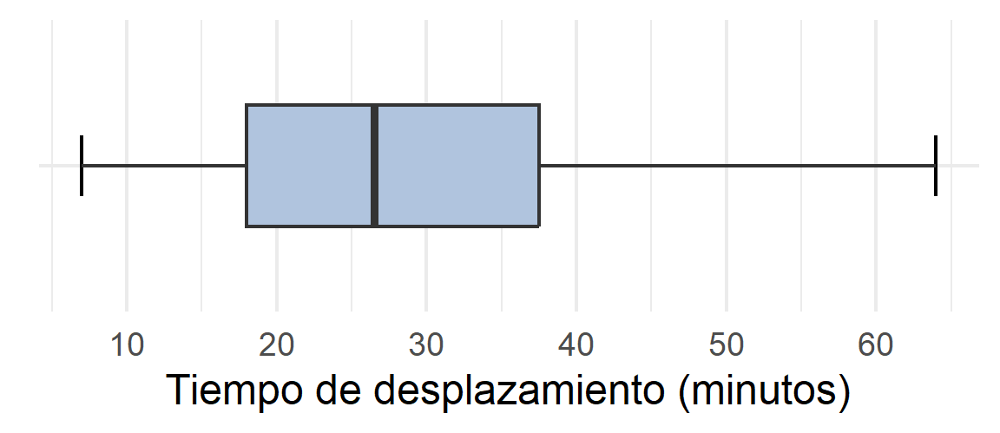
Salarios: el del gerente es atípico.
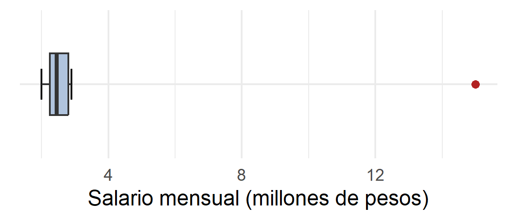
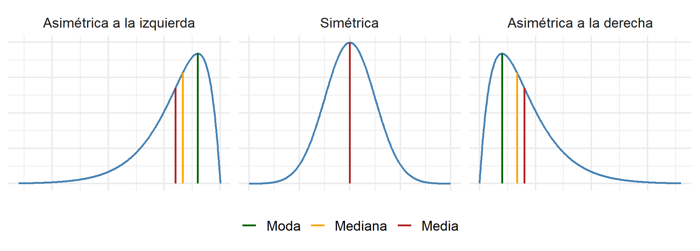
\[ b_1 = \frac{m_3}{s^3},\quad m_3 = \frac{1}{n}\sum (x_i - \bar{x})^3 \qquad\qquad A_P = \frac{3\,(\bar{x} - Me)}{s} \]
Tiempos: \(b_1 = 0{,}58\) y \(A_P = 0{,}50\) → asimetría moderada a la derecha.
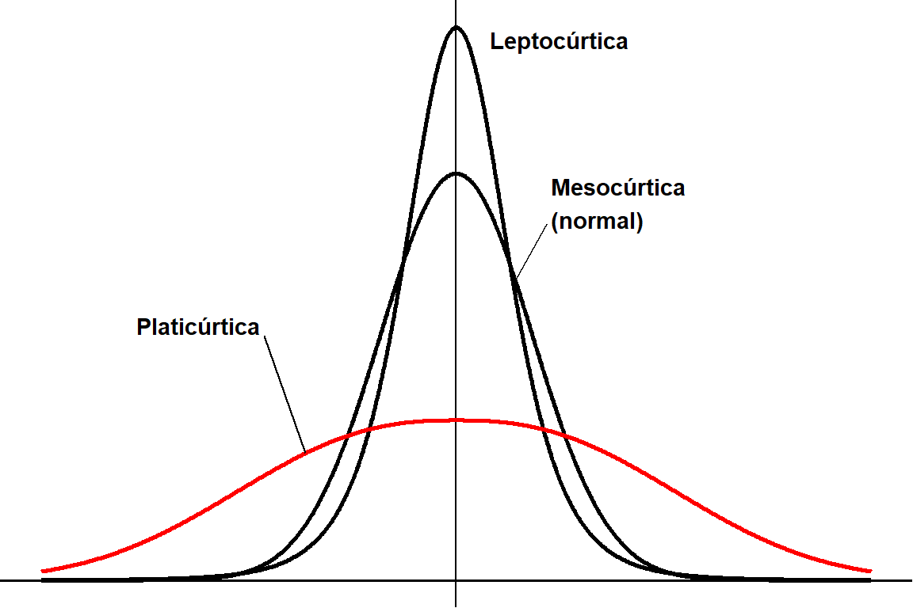
\[ b_2 = \frac{m_4}{s^4} - 3 \]
\(K = \dfrac{RIC}{2(D_9 - D_1)}\); normal \(\approx 0{,}263\).
Mide sobre todo el peso de las colas (Westfall, 2014). Tiempos: \(b_2 = -0{,}42\) y \(K = 0{,}276\) → no se aparta claramente de la normal.
| Medida | Tipo | ¿Robusta? | Tiempos |
|---|---|---|---|
| Media | Tendencia central | No | 28,85 |
| Mediana | Tendencia central | Sí | 26,5 |
| Desviación estándar | Dispersión | No | 13,98 |
| Coeficiente de variación | Dispersión | No | 48,5 % |
| Rango intercuartílico | Dispersión | Sí | 19,5 |
| \(Q_1\) y \(Q_3\) | Posición | Sí | 18 y 37,5 |
| \(b_1\) y \(A_P\) | Forma | No | 0,58 y 0,50 |
Distribución simétrica → media y desviación estándar. Asimétrica o con atípicos → mediana y RIC.
R es el motor: hace los cálculos.
RStudio es la cabina: desde ahí se maneja R.
https://posit.co/download/rstudio-desktop/
Sin computador: https://posit.cloud
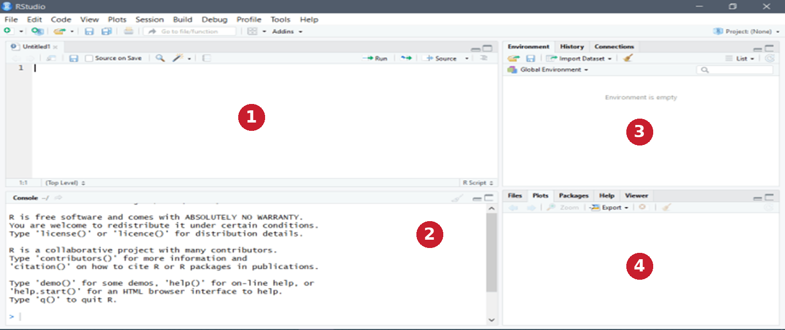
El decimal en R es el punto
3.5, no 3,5. La coma separa los argumentos de una función.
R es el celular; los paquetes son las aplicaciones.
Instalar: una sola vez, en la consola, con comillas.
there is no package called... → el paquete no está instalado o el nombre está mal escrito.
Estadistica1/
├── Estadistica1.Rproj
├── datos/
├── scripts/
└── resultados/datos/.getwd() y list.files("datos").Ruta relativa: "datos/encuesta_estudiantes.xlsx", porque el archivo está en la subcarpeta datos del directorio de trabajo.
En Windows: "C:/Users/...", nunca "C:\Users\...".
| Estructura | Dimensiones | Se crea con | Uso típico |
|---|---|---|---|
| Vector | 1 | c(), seq() |
Una variable |
| Factor | 1 | factor() |
Una variable cualitativa |
| Matriz | 2 | matrix() |
Tablas de contingencia |
| Arreglo | 2 o más | array() |
Tablas de tres variables |
| Lista | 1 | list() |
Resultados de funciones |
| Data frame | 2 | data.frame() |
Una base de datos |
Nominal → factor · Ordinal → factor(..., ordered = TRUE) · Intervalo o razón → numeric
library(readxl)
encuesta <- read_excel("datos/encuesta_estudiantes.xlsx")
encuesta$transporte <- factor(encuesta$transporte)
encuesta$estrato <- factor(encuesta$estrato, levels = 1:6, ordered = TRUE)
str(encuesta)tibble [40 × 6] (S3: tbl_df/tbl/data.frame)
$ id : num [1:40] 1 2 3 4 5 6 7 8 9 10 ...
$ carrera : chr [1:40] "Ingeniería Civil" "Medicina" "Química" "Medicina" ...
$ estrato : Ord.factor w/ 6 levels "1"<"2"<"3"<"4"<..: 4 3 3 3 3 4 2 3 4 3 ...
$ transporte: Factor w/ 5 levels "A pie","Bicicleta",..: 2 3 2 5 5 1 3 3 5 2 ...
$ hermanos : num [1:40] 0 1 1 1 2 1 2 3 2 0 ...
$ tiempo : num [1:40] 14 48 20 26 23 18 39 28 17 20 ...Los mismos resultados que obtuvimos a mano.
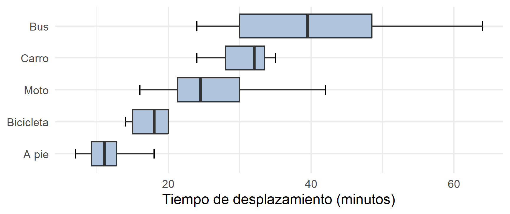
ggplot(datos, aes(...)) + geom_...() + labs(...): el gráfico se construye por capas.
Proyecto: el servicio de entrega de pizzas
1266 entregas de una pizzería en mayo de 2014 (Heumann et al., 2022). Metas del gerente: máximo 30 minutos y al menos 65 °C; vino gratis si la entrega tarda más de 40 minutos.
Realice un análisis exploratorio completo con R y entregue un informe de una página (ejercicio 22 de los apuntes).
pizza_delivery.xlsx, en la página del curso.Estadística I · UIS